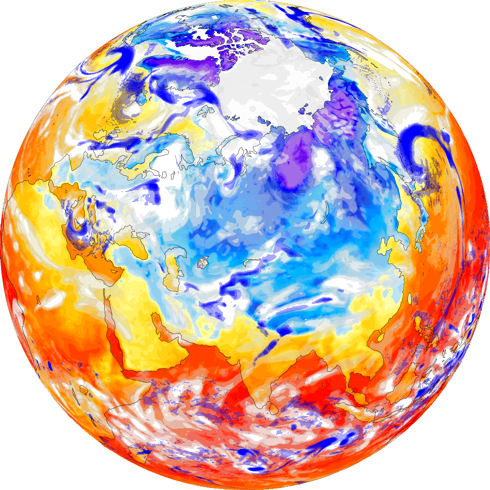

Чем больше внешних параметров – состояние атмосферы, океана, растительности, почвы и других – войдет в систему прогноза погоды, тем больше мы будем знать о предстоящих аномальных температурах и сможем лучше подготовиться к ним. Сотрудники Гидрометцентра России дополнили свою систему долгосрочного прогнозирования аномалий актуальной информацией о составе почвы, что, например, воспроизвело события жаркого лета 2010 года более достоверно.

Несколько лет назад ученые Гидрометцентра России и Института вычислительной математики РАН разработали глобальную модель атмосферы ПЛАВ, а недавно усовершенствовали ее и обновили информацию о составе почв из международной ландшафтной базы данных GSDE. Раньше для этой прогностической модели использовали старые данные, и известную жару лета 2010 года компьютерная программа воспринимала как холод. Теперь система показывает тот же прогноз на 4 месяца с высокими температурами.
В дальнейшем усовершенствованная модель, проверенная на данных прошлых лет, будет использована для актуальных прогнозов. Ученые также планируют добавить к анализу атмосферы и почвы прогноз погоды в Мировом океане и характеристики растительности, поскольку испарения растений влияют на количество осадков.
Нестабильность атмосферы не дает метеорологам точно предсказывать погоду, поэтому прогнозы более чем на несколько дней основаны на вероятностях. Но исследователи рассчитывают на то, что с помощью улучшенной модели вероятностный прогноз опасных событий будет предсказываться более надежно.
Вернутся на главную